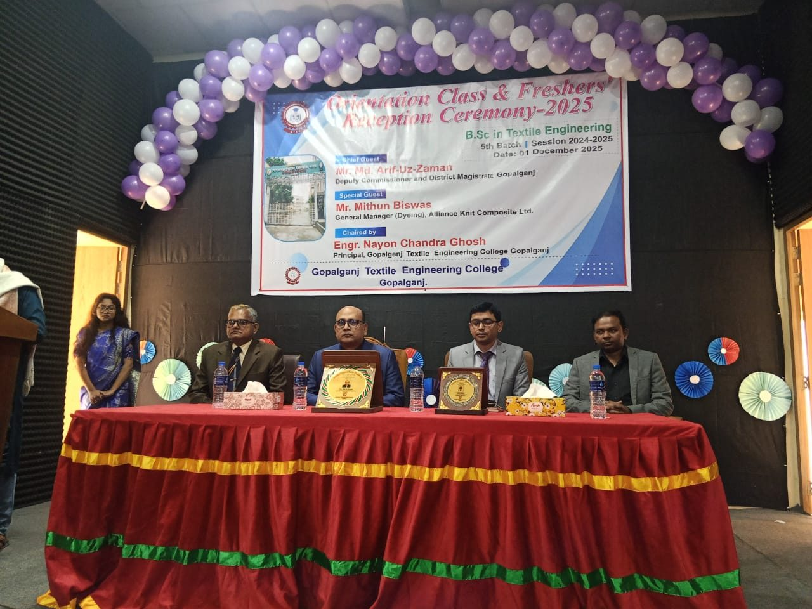

Admissions 2026–27ভর্তি ২০২৬–২৭
Diploma in Textile Engineering — Session 2026–27ডিপ্লোমা ইন টেক্সটাইল ইঞ্জিনিয়ারিং — সেশন ২০২৬–২৭
The application fee (৳ 500) must be paid by the same deadline. Unpaid applications are not considered.একই সময়ের মধ্যে আবেদন ফি (৳ ৫০০) পরিশোধ করতে হবে। অপরিশোধিত আবেদন বিবেচিত হবে না।
Key datesগুরুত্বপূর্ণ তারিখ
- 01 Sep – 20 Oct 2026০১ সেপ্টেম্বর – ২০ অক্টোবর ২০২৬Online application and feeঅনলাইন আবেদন ও ফিOpenচলছে
- 08 Nov 2026০৮ নভেম্বর ২০২৬Admission testভর্তি পরীক্ষা
- 25 Nov 2026২৫ নভেম্বর ২০২৬Result publicationফলাফল প্রকাশ
- 01 Dec 2026০১ ডিসেম্বর ২০২৬Institution allocationপ্রতিষ্ঠান বরাদ্দ
- 05–15 Dec 2026০৫–১৫ ডিসেম্বর ২০২৬Final admissionচূড়ান্ত ভর্তি
- 05 Jan 2027০৫ জানুয়ারি ২০২৭Classes beginক্লাস শুরু
Eligibilityযোগ্যতা
- SSC or equivalent, passed in 2024, 2025 or 2026.২০২৪, ২০২৫ বা ২০২৬ সালে এসএসসি বা সমমান পাস।
- Minimum GPA 3.50 with at least GPA 3.00 in Mathematics and Science (or as notified).ন্যূনতম জিপিএ ৩.৫০ এবং গণিত ও বিজ্ঞানে কমপক্ষে জিপিএ ৩.০০ (বা বিজ্ঞপ্তি অনুযায়ী)।
- Candidates with SSC (Vocational) apply under the vocational quota.এসএসসি (ভোকেশনাল) উত্তীর্ণরা ভোকেশনাল কোটায় আবেদন করবে।
Seats and quotaআসন ও কোটা
| Institution typeপ্রতিষ্ঠানের ধরন | Seatsআসন | Admission routeভর্তির পদ্ধতি |
|---|---|---|
| Textile Engineering Colleges (B.Sc.)টেক্সটাইল ইঞ্জিনিয়ারিং কলেজ (বি.এসসি) | 1,120১,১২০ | Admission through the affiliated university systemঅধিভুক্ত বিশ্ববিদ্যালয়ের মাধ্যমে ভর্তি |
| Textile Institutes (Diploma)টেক্সটাইল ইনস্টিটিউট (ডিপ্লোমা) | 6,240৬,২৪০ | This cycle — apply hereএই চক্র — এখানে আবেদন করুন Openচলমান |
| Textile Vocational Institutes (SSC Vocational)টেক্সটাইল ভোকেশনাল ইনস্টিটিউট (এসএসসি ভোকেশনাল) | 3,620৩,৬২০ | Applications open 01 Nov 2026আবেদন শুরু ০১ নভেম্বর ২০২৬ Closedবন্ধ |
| Quotaকোটা | Share of seatsআসনের অংশ |
|---|---|
| General meritসাধারণ মেধা | 85%৮৫% |
| Freedom fighter descendantsমুক্তিযোদ্ধার বংশধর | 5%৫% |
| Ethnic minoritiesক্ষুদ্র নৃগোষ্ঠী | 5%৫% |
| Persons with disabilitiesপ্রতিবন্ধী ব্যক্তি | 1%১% |
| Wards of DoT employeesবস্ত্র অধিদপ্তরের কর্মচারীর সন্তান | 4%৪% |
Required documentsপ্রয়োজনীয় কাগজপত্র
- SSC/equivalent certificate and mark sheetএসএসসি/সমমান সনদ ও নম্বরপত্র
- Recent passport-size photo (300×300 px, max 100 KB)সাম্প্রতিক পাসপোর্ট সাইজ ছবি (৩০০×৩০০ পিক্সেল, সর্বোচ্চ ১০০ কেবি)
- Birth registration or NID numberজন্ম নিবন্ধন বা এনআইডি নম্বর
- Quota certificate (if claimed)কোটা সনদ (প্রযোজ্য হলে)
How to applyকীভাবে আবেদন করবেন
- 1১Fill in the online formঅনলাইন ফরম পূরণ করুন
Choose programme and test centre; enter SSC details.প্রোগ্রাম ও পরীক্ষাকেন্দ্র নির্বাচন করুন; এসএসসির তথ্য দিন।
- 2২Upload documentsকাগজপত্র আপলোড করুন
Photo and SSC certificate (PDF/JPG).ছবি ও এসএসসি সনদ (পিডিএফ/জেপিজি)।
- 3৩Pay the application feeআবেদন ফি দিন
৳ 500 online. You receive an application ID by SMS.অনলাইনে ৳ ৫০০। এসএমএসে আবেদন আইডি পাবেন।
- 4৪Sit the admission test and check the resultভর্তি পরীক্ষা দিন ও ফলাফল দেখুন
Sign in as a candidate to download the admit card and see the result.প্রবেশপত্র ডাউনলোড ও ফলাফল দেখতে প্রার্থী হিসেবে লগইন করুন।
- 5৫Complete final admissionচূড়ান্ত ভর্তি সম্পন্ন করুন
Pay the admission fee at the allocated institution. Your student ID is issued.বরাদ্দকৃত প্রতিষ্ঠানে ভর্তি ফি দিন। শিক্ষার্থী আইডি ইস্যু হবে।
Migration (transfer between institutions)মাইগ্রেশন (প্রতিষ্ঠান পরিবর্তন)
Admitted students may apply for migration through their institution after classes begin. Migration depends on seat availability and is approved by the Ministry.ক্লাস শুরুর পর ভর্তিকৃত শিক্ষার্থীরা নিজ প্রতিষ্ঠানের মাধ্যমে মাইগ্রেশনের আবেদন করতে পারে। মাইগ্রেশন আসন প্রাপ্যতার ওপর নির্ভর করে এবং মন্ত্রণালয় অনুমোদন করে।